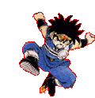

Обо мне
Я выбрал эту специальность потому, что в старшей школе увлекся кузнечным делом. Мне понравилось как выглядить горячий метал. Я пришел в ДонНТУ (лучших технический вуз
моего региона) и нашел там специальность связанную с металлом - металлургия черных металов.
Обучение в университете проходило по множеству дисцеплин, всесторонне раскрывая возможности моей специальности. От азов доменного производства, заканчивая современными
технологиями, например адьютивные технологии и подготовка материалов для них.
После окончания учебы в магистратуре планирую поступить в аспирантуру. Хочу заниматься научной деятельностью и работать в университете.
Краткое резюме магистра
| ФИО | Назарюк Владимир Юрьевич |
| Дата рождения | 30 Марта 2004 г. |
| Место рождения | г. Донецк, Украина |
| Школа(ы) | МБОУ СШ №7 г.Харцызск |
| ВУЗ |
Бакалавриат: ДонНТУ 2021 - 2025 гг. Магистратура: ДонНТУ 2025 - 2027 гг. |
| Средний балл | 4.9 |
| Знание языков | Русский - родной, Украинский - B1, Английский - B1. |
| Увлечения | Спортивный туризм (велосипедный и пеший), легкая атлетика, ориентирование. |
| Общие навыки |
|
| Профессиональные навыки |
|
| Надпрофессиональные навыки |
|
| Личные достижения |
|
| Планы на будущее | Хочу прогрессировать в карьере научного сотрудника, развивать науку в России и всем мире. |
Реферат по теме выпускной работы
Сейчас тут бак. работа, маг. пока нету
Документ: Реферат магистра
Скачать PDFБиблиотека материалов по теме выпускной работы
! Список не полный.
Собственные публикации и доклады
-
Назарюк, В. Ю. Сравнительные испытания материала отливок колес шламовых насосов на абразивный износ / В. Ю. Назарюк, В. И. Симоненко // Металлургия XXI столетия глазами молодых : Материалы Всероссийской научно-практической конференции молодых ученых и студентов. – Донецк: Донецкий национальный технический университет, 2024. – С. 14-15.
Авторы: В. Ю. Назарюк, В. И. Симоненко
Описание: Результаты испытания отлитых образцов из высокохромистого чугуна.
Действие: [Скачать 04.pdf]
-
Назарюк, В. Ю. Сравнительные испытания материала отливок колес шламовых насосов на абразивный износ / В. Ю. Назарюк, В. И. Симоненко // Металлургия XXI столетия глазами молодых : Материалы Всероссийской научно-практической конференции молодых ученых и студентов. – Донецк: Донецкий национальный технический университет, 2025. – С. 14-15.
Авторы: В. Ю. Назарюк, В. И. Симоненко
Описание: Результаты испытания отлитых образцов из высокохромистого чугуна.
Действие: [Скачать 02.pdf]
Индивидуальный раздел: В седле
«Жизнь — как вождение велосипеда: чтобы сохранить равновесие, ты должен двигаться.» (Альберт Эйнштейн)
В неучебное время я занимаюсь туризмом, а в особенности люблю - велосипедный туризм
Для инженера крайне важно находить время для перезагрузки, находить баланс между работой и отдыхом. Моим главным источником вдохновения и объектом мечтаний является спортивный велосипедный туризм.
Велотуризм объединяет в себе всё лучшее: непрерывную физическую активность, автономность, знакомство с дикой природой и проверку техники на прочность. Путешествие на велосипеде дарит ни с чем не сравнимое ощущение свободы: скорость достаточно высока, чтобы преодолевать десятки и сотни километров в день, но в то же время ты не отделен от окружающего мира стеклом автомобиля. Ты чувствуешь каждый подъем, встречный ветер, запах соснового леса и ночную прохладу степи.
Основные направления и формат походов
В поездках я отдаю предпочтение формату автономных путешествий:
- ПВД (Походы выходного дня): радиальные и линейные выезды на дистанции 80-150 км по родному краю. В современных условиях такие походы проходят без ночевок.
- Многодневный байкпакинг: походы с палаткой или гамачной системой, походной кухней и запасами еды, где всё необходимое крепится прямо на раму и руль велосипеда. Такие походы позволяют почувствовать весь вкус путешествия по своей родине
Почему велосипед?
- Выносливость и самодисциплина. Многочасовое кручение педалей в гору воспитывает упорство, которое здорово помогает доводить до конца сложные инженерные задачи и научные исследования.
- Умение ориентироваться и планировать. Составление трека по топографическим картам, расчет высотного профиля и запасов воды — отличный практический навык.
- Техническая грамотность. В полевых условиях нужно уметь быстро исправить восьмерку, отрегулировать трансмиссию или заклеить пробитую камеру подручными средствами.

Рисунок 1 - Мой велосипед во время ПВД (Зуевка - июнь 2026)
Велосипедная культура в нашем университете
На портале магистров ДонНТУ многие выпускники посвящали разделы велосипедам и активному туризму. Вот некоторые выпускники, чьи работы мне понравились:
| Туризм и ПВД | Силин А. В. (2009, ГГФ), Бутятина Д. В. (2022, ИЭФ), Зиняр А. Ю. (2014, ФКИТА), Буцяк В. С. (2019, ФЭХТ), Кузьмина М. С. (2009, ФЭМ), Фараон А. В. (2011, ФИММ), Столяров М. А. (2009, МехФ), Разумов К. О. (2018, ЭТФ), Сухоруков А. И. (2011, ЭТФ), Выприцкая Е. В. (2008, ФВТИ), Красников А. С. (2010, ИГГ), Челпанов М. А. (2008, ФЭМА), Бацкалова В. В. (2016, ФРТ), Будишевский И. С. (2012, ФКИТА) |
| Спорт и кросс-кантри | Курпяков Р. В. (2011, ФИММ), Мурзин Б. П. (2011, ФКНТ), Шумский А. А. (2013, ФКНТ), Голенков Е. В. (2015, ФИММ) |
| Матчасть и апгрейд | Короченков Д. А. (2008, ФВТИ), Евдокимов И. А. (2009, ФВТИ), Крайний А. В. (2015, ФКНТ), Шаховой М. В. (2022, ФКИТА) |
| Личный опыт и город | Лукьянов С. В. (2005, ФВТИ), Любчак В. В. (2011, ФКИТА), Титаренко А. В. (2011, ФКНТ), Цыбулька Д. В. (2010, ФКИТА), Барков А. В. (2014, ФИММ), Брынза В. С. (2014, ФКНТ) |
Тематические ссылки
- Сервис Nakarte.me — основной инструмент для планирования туристических маршрутов по топографическим картам и спутниковым снимкам.
- Портал магистров ДонНТУ — раздел индивидуальных тем выпускников прошлых лет.